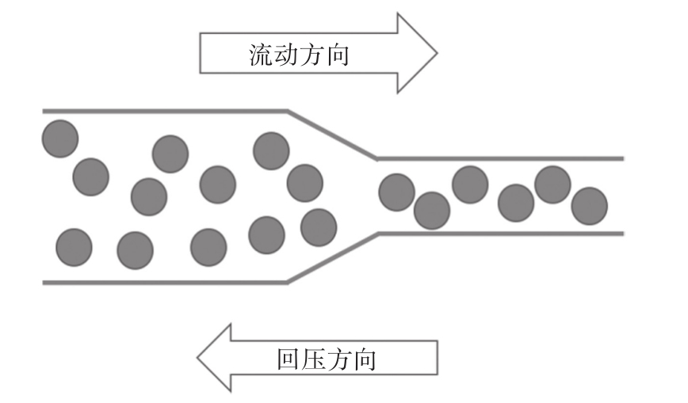

“回压”（Back Pressure）也称为“背压”，是一个源自于传统工程中的概念，在一个传输管道中，液体或者气体应该朝某一个方向流动，但是前方管道口径变小，这时候液体或者气体就会在管道中淤积，产生一个和流动方向相反的压力，因为这个压力的方向是往回走的，所以称为回压。
在RxJS的世界中，数据管道就像是现实世界中的管道，数据就像是现实中的液体或者气体，如果数据管道中某一个环节处理数据的速度跟不上数据涌入的速度，上游无法把数据推送给下游，就会在缓冲区中积压数据，这就相当于对上游施加了压力，这就是RxJS世界中的“回压”。
在前面5.13节介绍zip的时候，就涉及了回压的问题。当zip合并两个Observable对象，其中一个A产生数据速度快，另一个B产生数据速度慢，因为每一个来自A的数据都要一个B中的数据一对一配对，那么zip就不得不缓存A推送的数据，时间一长，zip需要缓存的A产生的数据就会越来越多，这就是回压的问题，如图7-10所示。

图7-10 回压示意图
回压这种现象的根源是数据管道中某个环节数据涌入的速度超过了处理速度，那么，既然处理不过来，干脆就舍弃掉一些涌入的数据，这种方式称为“有损回压控制”（Lossy Backpressure Control），通过损失掉一些数据让流入和处理的速度平衡，剩下来的问题就是决定舍弃掉哪些数据？
RxJS提供了一系列操作符来实现有损的回压控制，因为涉及只让部分上游数据流入下游，所以功能上这些操作符也属于过滤类操作符的范围。
回压控制操作符包含以下这些：
·throttle
·debounce
·audit
·sample
还有对应上面四个操作符的带Time后缀的简化版操作符：
·throttleTime
·debounceTime
·auditTime
·sampleTime
之所有说带Time后缀的是简化版操作符，是因为在RxJS中Observable是一等公民，地位很高，所以，不带Time后缀的操作符是利用另一个Observable对象来控制如何抛弃来自上游Observable对象的数据，简单利用时间做回压控制的操作符就只能带上Time后缀了。不过，为了方便理解，从带Time后缀的操作符开始可能更好。
注意
有损回压控制并不是唯一的回压控制方式，在下一章转化数据部分，我们会介绍无损回压控制（Loseless Backpressure Control）。